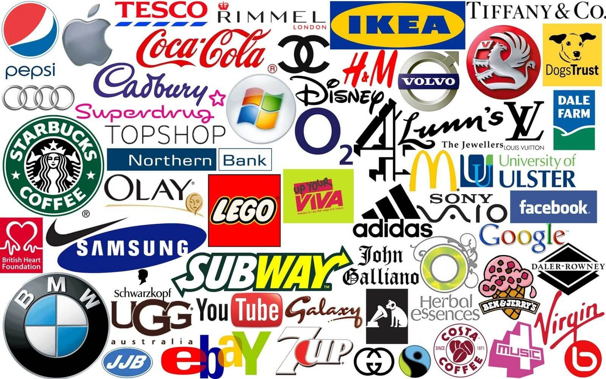
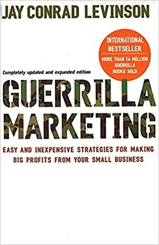

Creation of New Markets


There is this set of companies doing things in this market alpha and this other set of companies doing things in this market beta, the goal of the entrepreneur competing against none consumption is to build at the intersection of the alpha and beta ones a new market zeta. A new market zeta that will make the companies of each respective market alpha and beta collaborate to produce new unseen products and services that consumers will love and buy. Real entrepreneurship is about market creation. Releasing new business opportunities that highlight new ways of consumption and consumer behaviors. If the entrepreneur and market creator leverage the power of status and storytelling he or she could extract more value from this new market created.
All of these seems very theoretical but very close to works that have been done by valuable people like Clayton Christensen and set Godin but theories have been undervalued by this dying industrial complex that was needing compliant workers once it had working applications and solutions coming from past theoretical works to sell to us.
Of course, practice is an important skill to have but theories help us practice better.
This article about the gaming market seems to have nothing to do with this article about the business of luxury but I am glad to have learned some theoretical ideas about analogy and cognitive science what helped me connect these two articles and create practically a new market with a lot of amazing tech products and services.
Like you, I am a knowledge-driven person and learning is what fuels and motivates me. Once I find a new thing to learn, I am, and I hope you too, very excited to go deeper into it while keeping in mind what I have learned before and how these memorized insights can be applied right there using the power of analogy and metaphors.
Knowledge is very often about connecting with other’s thoughts and confronting those thoughts with the fixed personal ideas that we hold. Being mindfully flexible helps put light on what’s important.
The business of knowledge fueled by clicks, content marketing, and advertising can be bothering but hopefully, we have insightful bloggers, writers, and book authors that care more about shipping ideas to the world than their pockets.
Ended this article about creating new markets with a short rant about knowledge and learning because I am asking myself how to create new knowledge-driven markets that could disrupt education because the world’s education system seems to stuck but I do believe that universities like Harvard, Stanford, and poly technique are really valuable universities that just need to adapt to this new digitized society were living and this pandemic era was an opportunity for them to stress-test new ideas about shipping knowledge differently and efficiently. I hope they did come up with new project-driven student-centered solutions that help student learn better, meantime I am still this student of the market that Jay Conrad Levinson advised me to be.
further reading :
